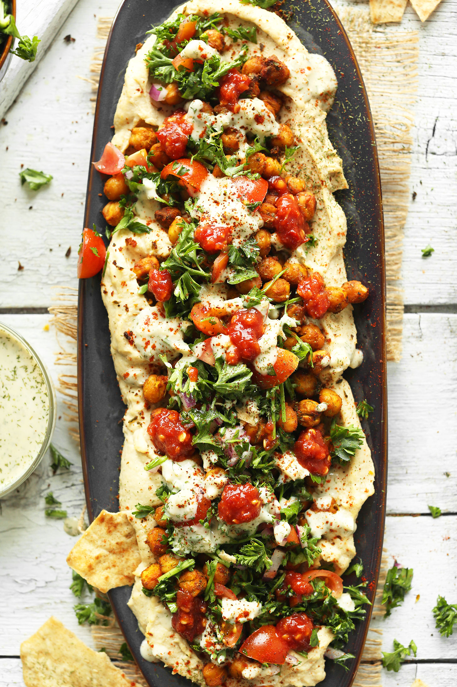
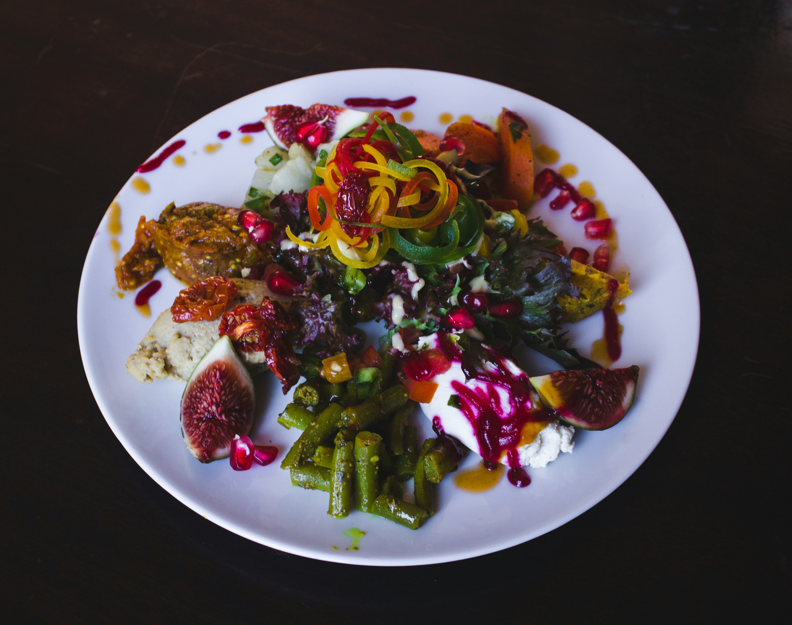

Chickpea Shawarma
Ingredients
Servings: 4 Prep time: 15 mins Cook Time: 20 mins
- 1 tablespoon paprika
- ½ teaspoon of cumin
- ½ teaspoon cinnamon
- Salt and freshly ground pepper
- Half jar of roasted chickpeas with shawarma spice (1 1/2 cups)
- 4 pittas (warmed)
- 1 cucumber thinly sliced
- pickled onion or thinly sliced onion
- Mint (optional)
- 1 cup of fresh cilantro
- 2 tablespoons of extra-virgin olive oil
- 1 or 2 green chillies
- 1 garlic clove
- ¼ teaspoon of cumin
- Salt and freshly ground pepper
- ½ cup plain yogurt
- ½ tablespoon extra-virgin olive oil
- ½ tablespoon fresh lemon juice
- Salt and pepper
Shawarma Spice
For the Wraps
Zhoug
Yoghurt Sauce
Recipe
- Preheat the oven to 400°F and line a baking sheet with parchment paper.
- Make the shawarma spice mix: In a small bowl, combine the coriander, paprika, cumin, cinnamon, ginger, cayenne, and pinches of salt and pepper. Use generous pinches to season the chickpeas before and after roasting them.
- Make the zhoug: Place the cilantro, olive oil, jalapeño, garlic, cumin, coriander, salt, and a few grinds of pepper in a food processor and process until you reach a pesto-like consistency.
- Make the yogurt sauce: In a small bowl, combine the yogurt, olive oil, lemon juice, salt, and several grinds of black pepper.
- Assemble the pitas with the hummus, chickpeas, cucumber, tomato, pickled onion, mint, dots of the zhoug, and drizzles of the yogurt sauce.
